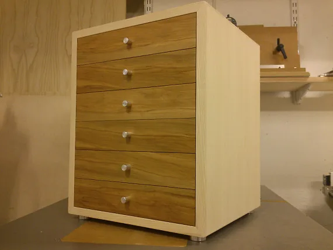

Möbler / Förvaring
Smyckesförvaring
Ask · äpple · 2014

Form, material
och funktion.
Lådor i ask och äppelträ kombineras med flyttbara avdelare för små föremål.
- Material
- Ask · äpple
- Tillverkningsår
- 2014
- Utförande
- Möbel / Förvaring
Närmare möbeln / klicka för större bild
Fler arbeten
Fortsätt upptäcka.

Från din idé till något alldeles eget